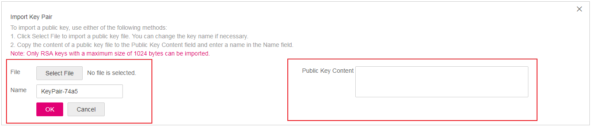

Scenarios
You need to import a key pair in either of the following scenarios:
- Create a key pair using PuTTYgen and import the public key to the ECS.
- Import the public key of an existing key pair to the ECS to let the system maintain your public key.

If the public key of the existing key pair is stored by clicking Save public key on PuTTY Key Generator, the public key cannot be imported to the management console.
If you want to use this existing key pair for remote login, see Why Does a Key Pair Created Using puttygen.exe Fail to Be Imported on the Management Console?
Procedure
- Log in to the management console.
- Click
 in the upper left corner and select your region and project.
in the upper left corner and select your region and project. - Under Computing, click Elastic Cloud Server.
- In the navigation pane on the left, choose Key Pair.
- On the Key Pair Service page, click Import Key Pair.Figure 1 Import Public Key
 - Use either of the following methods to import the key pair:
- Selecting a file
- In the Import Key Pair dialog box of the management console, click Select File and select the locally stored public key file (for example, the .txt file saved in 3 in Creating a Key Pair Using PuTTYgen).
Make sure that the file to be imported is a public key file.
- Click OK.
After the public key is imported, you can change its name.
- In the Import Key Pair dialog box of the management console, click Select File and select the locally stored public key file (for example, the .txt file saved in 3 in Creating a Key Pair Using PuTTYgen).
- Copying the public key content
- Copy the public key content from the locally stored .txt file into the Public Key Content text box.
- Click OK.
- Selecting a file